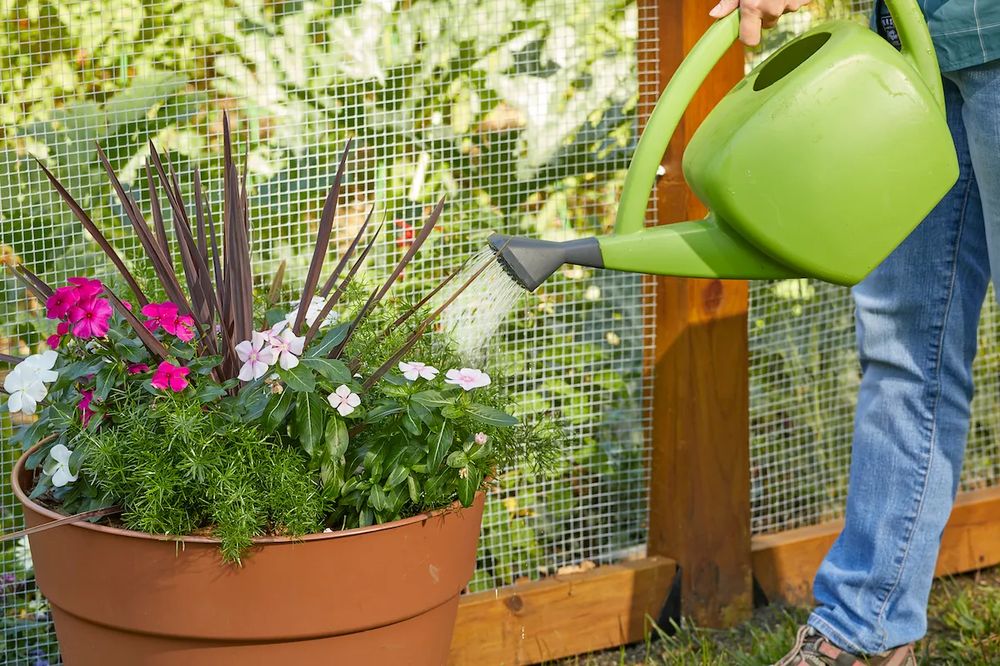
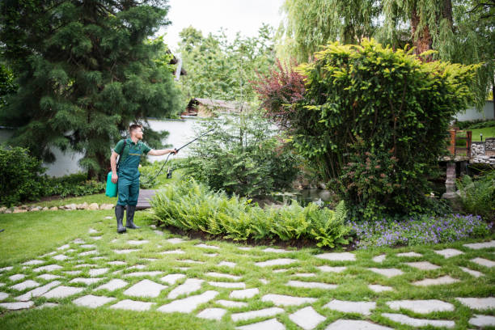

Botanical Garden
Home
About
Contact
"Explore the Beauty of Nature"
"Discover Our Diverse Collection of Plants and Flowers"
Discover More
Plant Health and Care
Watering Tips
Water plants early in the morning or late in the afternoon.
Avoid overwatering; check if the soil is dry before adding more water.
Use a watering can with a gentle spout to avoid damaging delicate plants.

Soil Care
Use well-draining soil to prevent waterlogging.
Mix compost or organic matter into the soil to improve its nutrient content.
Regularly aerate the soil to allow better oxygen flow to the roots.
Pest Control
Use natural pest repellents like neem oil or insecticidal soap.
Encourage beneficial insects, like ladybugs, to keep pests in check.
Regularly inspect your plants for signs of pests.

Sunlight Needs
Place plants that need full sun in areas that get 6-8 hours of direct sunlight.
Shaded plants should be placed in areas with indirect sunlight.
Rotate plants occasionally to ensure all sides get sunlight evenly.
Seasonal Care
In winter, move sensitive plants indoors or cover them with frost cloths.
Reduce watering in cooler months, as plants need less water.
Fertilize plants in spring to boost growth after dormancy.